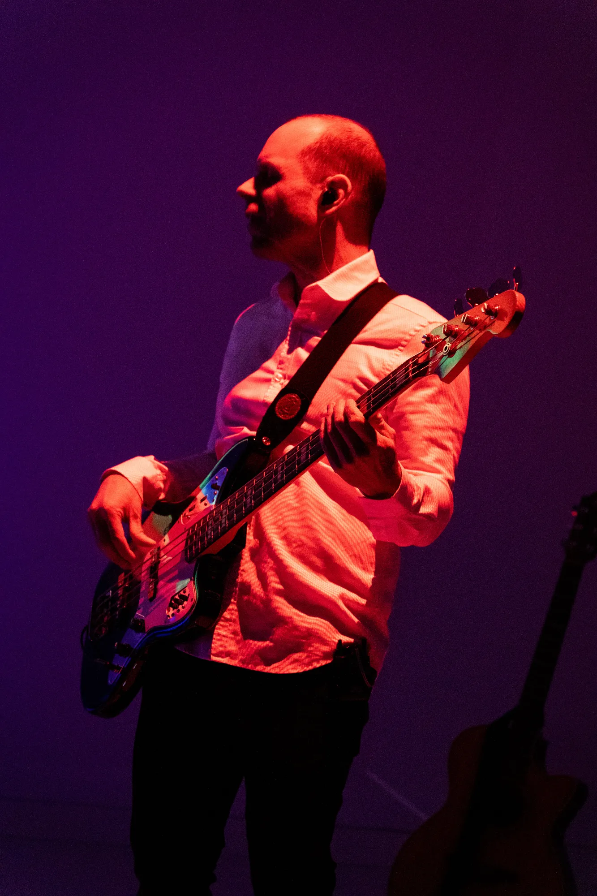
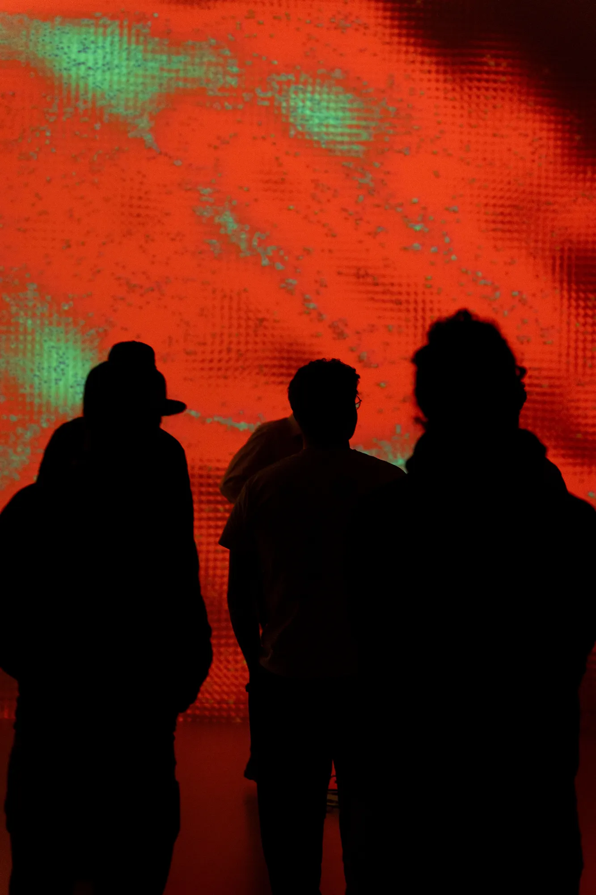
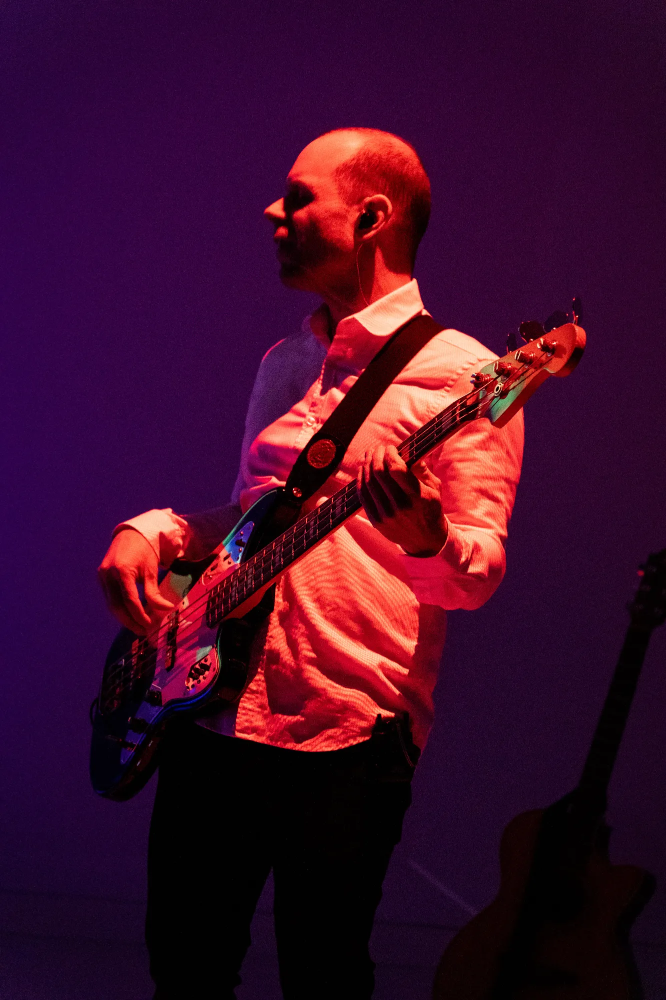
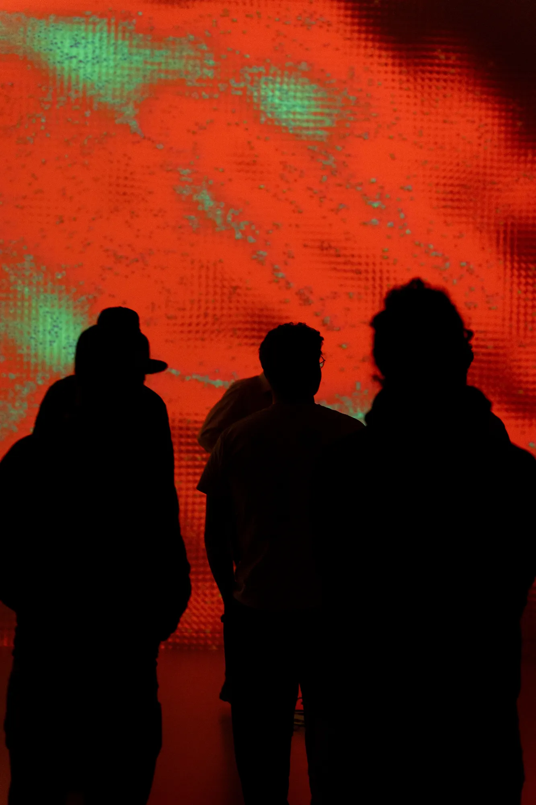

Do Not Feed the Musicians
Immersive Concert
A concert as an experimental lab: musicians and audience are monitored, analyzed, copied. An algorithm that listens, watches, evaluates — and
interferes. What begins as a tech startup’s trial run evolves into an immersive audiovisual narrative about creativity in the age of AI and digital
reproducibility. As streaming platforms are flooded with AI-generated music and algorithms decide what we hear, Do Not Feed the Musicians asks about the
value of human expression in a world where art becomes fodder for the machine. Somewhere between performance, installation, and pop concert, the
experience unfolds into a dazzling, abstract visual journey, accompanied by pulsating indietronica tunes — performed live by emerging media artists and
a four-piece band, in 360° projection and surround sound.
Audiovisual concert performance, 360° real-time visuals, 28 projectors, spatialized multi-channel sound, 90 loudspeakers
- Immersive Concert
- Rhyality Immersive Art Hall
Performances
12 September 2025
20 September 2025
Tickets
Type
Independent Project
Roles
Concept, Storytelling, Design, Programming, Setup, Show Control
Technologies
TouchDesigner, Kinect, Chataigne, Pixera, Reaper, Holophonix, Node.js, Svelte.js
 



Credits
Concept, Storytelling:
Jonas Wolter, Saïd Boulahcen, Vivien Helbling
Visuals Creation:
Jonas Wolter, Vivien Helbling
Programming Real-Time Video Rendering Pipeline, Video Network:
Jonas Wolter
Composition, Sound Design, Spatialized 3D Audio Mix:
Saïd Boulahcen
Live Band:
Saïd Boulahcen, Luis Aellig, Marco Clerc, Matthias Stamm